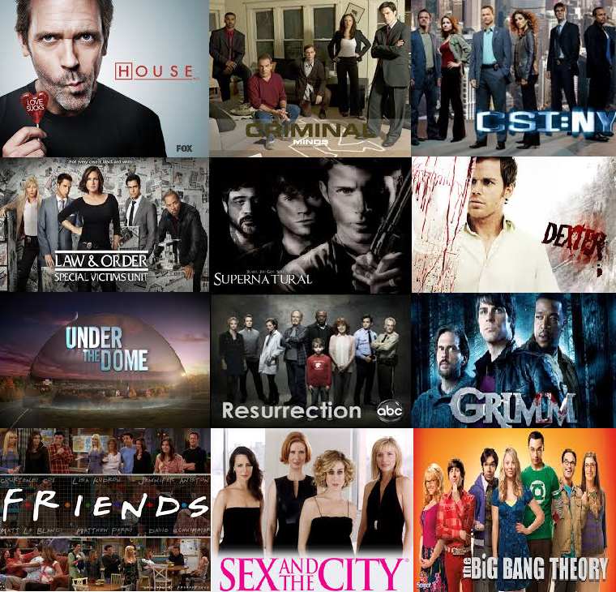
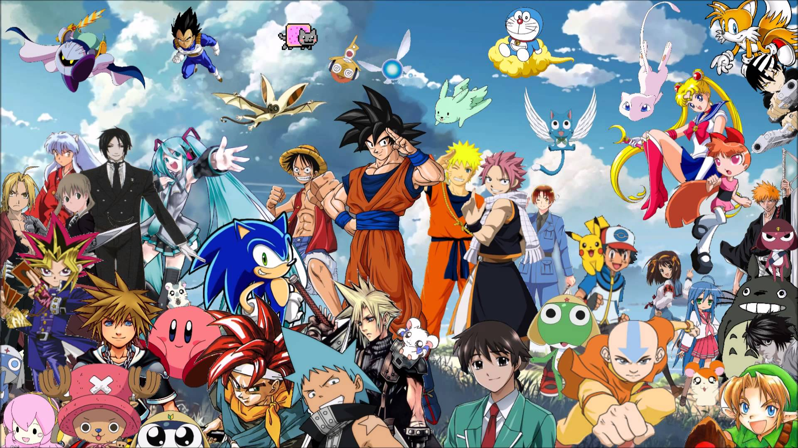
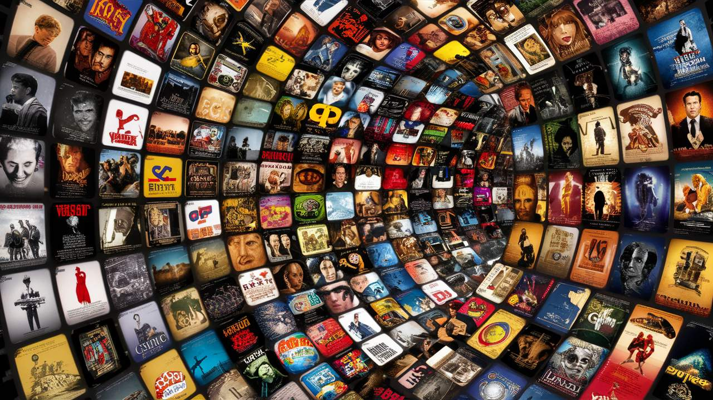

As séries de televisão são ótimas para acompanhar histórias profundas e o desenvolvimento de personagens ao longo do tempo.

Os animes destacam-se pela animação expressiva, enredos envolventes e universos fantásticos repleto de ação e emoção.

>O cinema nos transporta para universos únicos e proporciona experiências marcantes em poucas horas de exibição.
